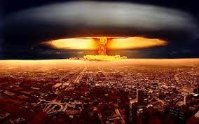
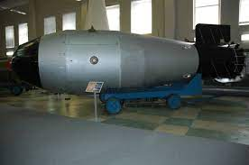

Cursa inarmarilor


In perioada Razboiului Rece, cele doua puteri se angajeaza intr-o cursa a inarmarilor, incercand sa se intreaca reciproc.
- SUA dezvolta arma atomica, iar URSS depune eforturi pentru a-i ajunge din urma.
- In 1949, URSS detoneaza propria arma atomica, urmata de britanici in 1952, francezi in 1960 si chinezi in 1962.
- URSS intra in cursa pentru bomba cu hidrogen produsa de americani in 1950 si dezvolta propriile sale in 1953, urmand eforturi de transport si fabricare a rachetelor nucleare.
- Initial, nu se pune problema descurajarii producerii armelor nucleare, insa ulterior au fost incheiate o serie de acorduri in acest sens.
- Detinerea armelor nucleare genereaza o perioada de pace din teama folosirii lor, in timp ce zonele care nu detin arme nucleare se confrunta cu numeroase conflicte armate
- Pe parcurs, devine tot mai evidenta necesitatea controlului armamentului nuclear, Moscova si Washington fiind preocupate de evitarea unui razboi nuclear si incercand sa franeze cursa inarmarilor, stabilind arsenale comune si incercand sa creeze un "club nuclear" cat mai restrans.
- In 1963, este incheiat un tratat care interzice experimentele nucleare in atmosfera, spatiul extra-atmosferic si subacvatic, urmat de alte tratate care stabilesc dezarmarea unor zone, interzicerea fabricarii armelor biologice (1972) si a celor care pot modifica mediul inconjurator (1977).
- In 1972, este semnat acordul SALT I (Tratatul de Limitare a Armelor Strategice), care limiteaza voluntar numarul de arme, iar in 1979 SALT II.